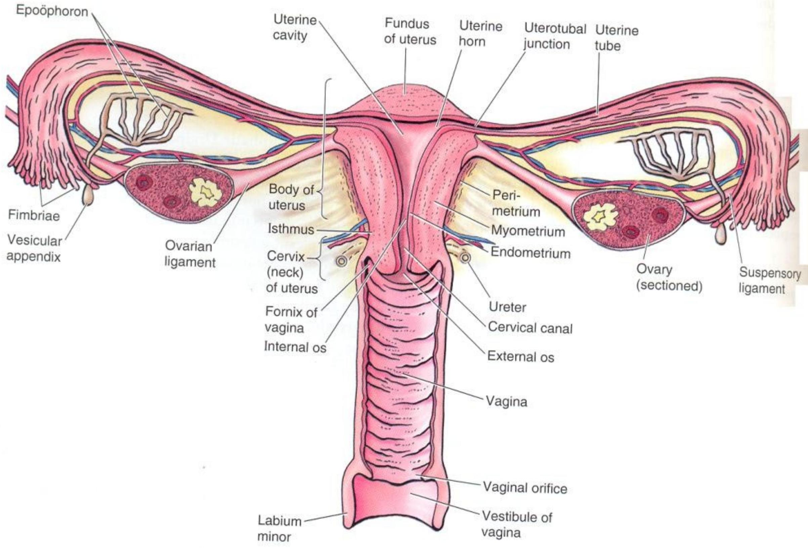
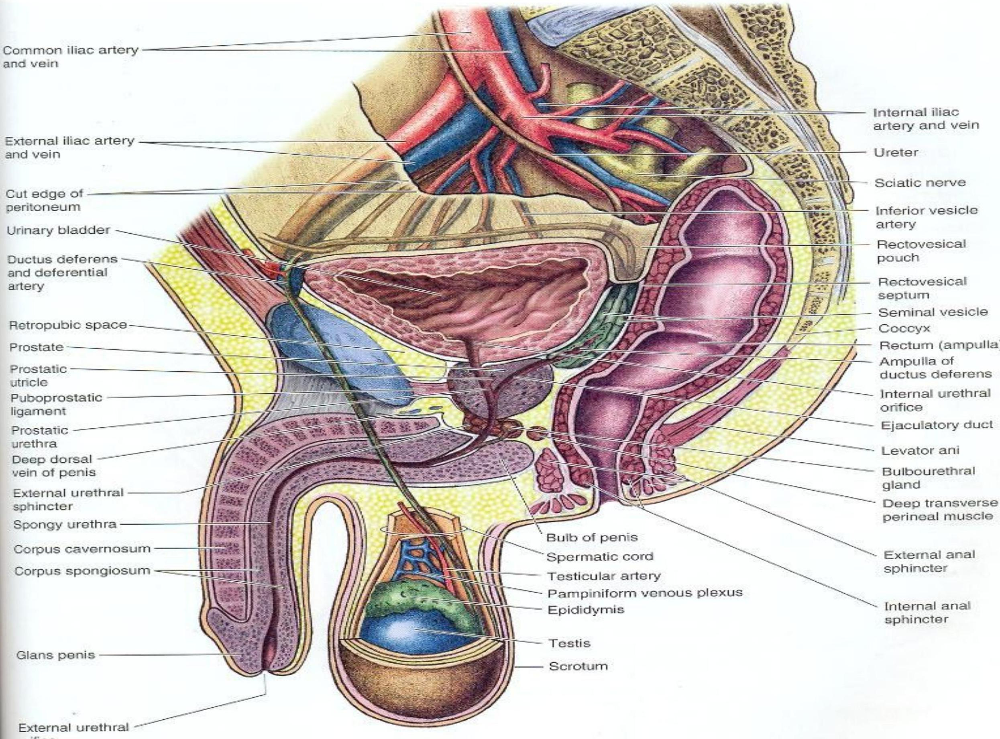

Lecture 2: Anatomy and Physiology of the Reproductive Systems
The Female Reproductive System
The female reproductive organs, or genitalia, include the breast, ovary, uterine tube, uterus, and vagina. The primary functions of the female reproductive system are the formation of ova (eggs), reception of spermatozoa, provision of suitable environments for fertilisation and fetal development, parturition (childbirth), and lactation (the production of breast milk).
External Genitalia (Vulva)
The external genitalia consists of the labia majora, labia minora, the clitoris, the vaginal orifice, the vestibule, the hymen, and the vestibular glands (Bartholin's glands).
- Labia Majora: Two large folds forming the boundary of the vulva, composed of skin, fibrous tissue, and fat, containing numerous sebaceous and sweat glands.
- Labia Minora: Two smaller folds of skin between the labia majora.
- Vestibule: The cleft between the labia minora where the vagina, urethra, and ducts of the vestibular glands open.
- Clitoris: Corresponds to the penis in the male and contains sensory nerve endings and erectile tissue.
- Vestibular Glands (Bartholin's glands): Situated on each side near the vaginal opening, they secrete mucus that keeps the vulva moist.
- Hymen: A thin layer of mucous membrane that partially occludes the opening of the vagina.
Internal Genitalia
The internal genitalia consist of the vagina, uterus, two uterine tubes, and two ovaries.

- Vagina: A strong canal of muscle that runs obliquely upwards and backwards. It serves as an excretory pathway for menstrual fluid, forms the inferior part of the birth canal, and receives the penis during sexual intercourse. It has a normal flora of Lactobacillus acidophilus bacteria that secrete lactic acid, maintaining a pH of 4.9-3.5, which inhibits the growth of other microorganisms.
- Uterus: A thick-walled, pear-shaped, hollow, muscular organ that lies in the pelvic cavity. It accommodates the developing embryo and is where the placenta attaches. Its walls are composed of three layers: the perimetrium (outer serous coat), myometrium (smooth muscle layer), and endometrium (inner mucous coat shed during menses).
- Uterine (Fallopian) Tubes: About 10 cm long, these tubes extend from the uterus and open near the ovaries. They propel the ovum from the ovary to the uterus and are the site of fertilization. Each tube has fingerlike projections called fimbriae.
- Ovaries: These organs produce sex hormones and ova. Each ovary contains ovarian follicles in various stages of maturity. During the childbearing years, about every 28 days, a mature Graafian follicle ruptures and releases its ovum (ovulation).
The Male Reproductive System
The functions of the male reproductive organs are the production, maturation, and storage of spermatozoa, and the delivery of spermatozoa in semen into the female reproductive tract.
External Genitalia
- Scrotum: A pouch of pigmented skin, fibrous and connective tissue, and smooth muscle. It is divided into two compartments, each containing one testis. The cremaster muscle controls the position of the scrotum and testes, pulling them closer to the body for warmth.
- Penis: The male copulatory organ. It consists of three columns of erectile tissue: two corpora cavernosa and one corpus spongiosum, which surrounds the urethra. The glans penis is the expanded distal end, covered by a loose fold of skin called the prepuce or foreskin.
Internal Organs and Duct System
- Testes: The male reproductive glands, equivalent to the ovaries. They produce sperm (spermatogenesis) and the hormone testosterone. Successful spermatogenesis takes place at a temperature about 3°C below normal body temperature, which is why the testes are located outside the abdominal cavity.
- Epididymis: A long tube located along the posterior margin of each testis where sperm mature and are stored. It takes about 20 days for sperm to pass through the epididymis and gain motility.
- Ductus Deferens (vas deferens): A fibromuscular tube that is continuous with the epididymis and transports sperm towards the urethra.
- Ejaculatory Duct: Formed by the joining of the ductus deferens and the duct from the seminal vesicle, it passes through the prostate gland and empties into the urethra.
- Urethra: Transports semen from the ejaculatory duct to the outside of the body.
Accessory Glands
These glands produce seminal fluid, which is an alkaline mixture needed to neutralize the acidic environment of the vagina and nourish the sperm.
- Seminal Vesicles: Secrete about 60% of the seminal fluid, which is clear and alkaline and contains fructose for sperm nutrition.
- Prostate Gland: Secretes about 30% of the seminal fluid, which is milky and slightly acidic and contains an antibiotic to kill bacteria.
- Bulbourethral (Cowper's) Glands: Secrete a clear, alkaline mucus to buffer and lubricate the urethra.
Spermatozoa
A mature sperm has a head, a body, and a long whip-like tail used for motility. The head contains the nucleus with its DNA and enzymes required to penetrate the ovum. The body is packed with mitochondria for energy to fuel the tail's propelling action.
Puberty and Hormonal Control
Puberty is the age at which the internal reproductive organs reach maturity, marking the beginning of the childbearing period. It is initiated by gonadotrophins (FSH & LH) from the anterior pituitary gland.
Puberty in the Female (ages 12-14)
Physical and psychological changes at puberty in girls include:
- The uterus, uterine tubes, and ovaries reach maturity.
- The menstrual cycle and ovulation begin (menarche).
- Breasts increase in size and become spherical in shape.
- Typical female shape develops (broad hips, narrow chest).
- Pubic and axillary hair begins to grow.
- Rapid increase in height and widening of the pelvis.
- Increased fat deposited in subcutaneous tissue, especially at the hips and breasts.
- Face may become smooth or develop acne.
Puberty in the Male (ages 10-14)
Under the influence of androgens (testosterone), secondary characteristics appear:
- Marked increase in height and weight.
- Enlargement of the larynx and deepening of the voice.
- Growth of hair on the face, axillae, chest, abdomen, and pubis.
- Enlargement of the penis, scrotum, and prostate gland.
- Maturation of the seminiferous tubules and production of spermatozoa.
- First ejaculation (spermache) and nocturnal emissions (wet dreams).
- Gain in muscular strength and weight.
- The skin thickens and becomes oilier, sometimes with acne.